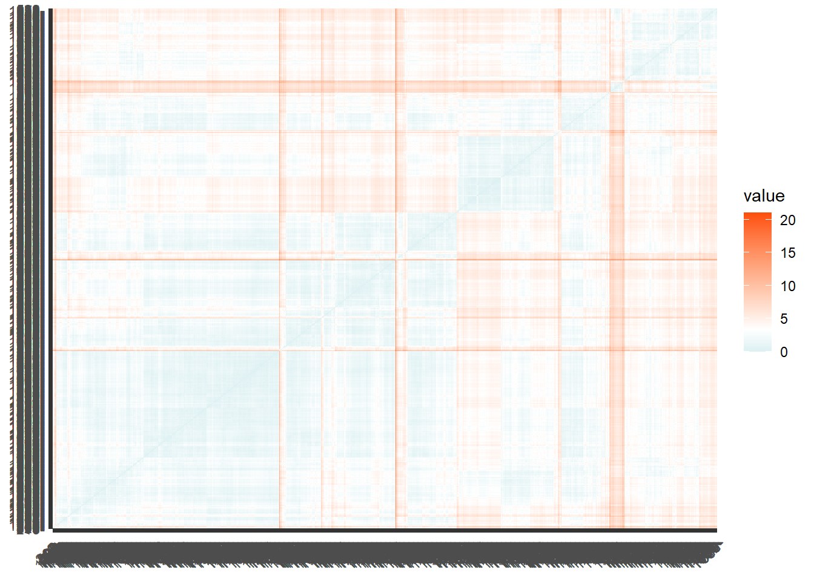
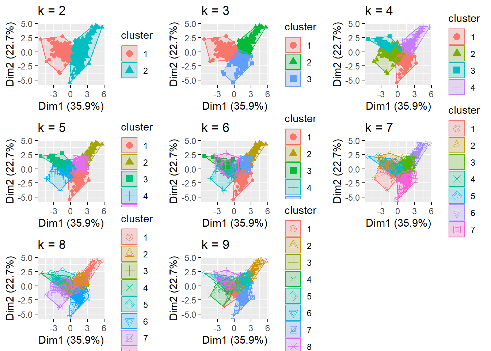
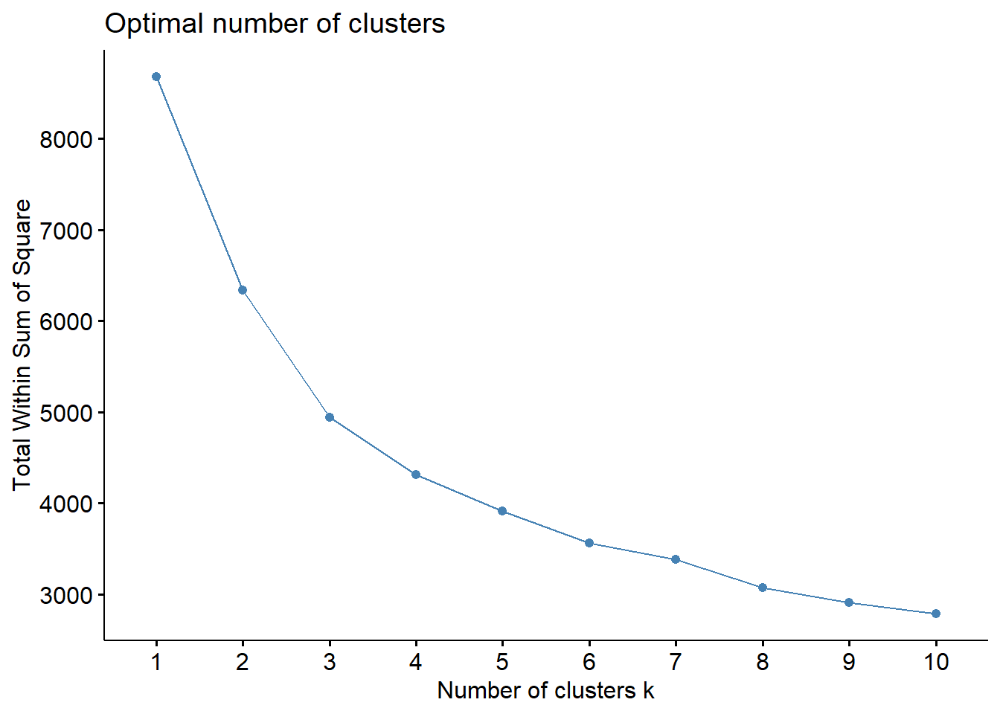
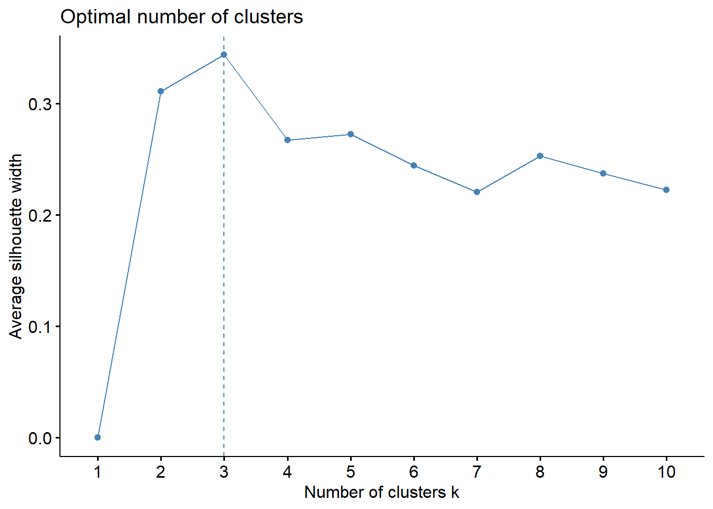
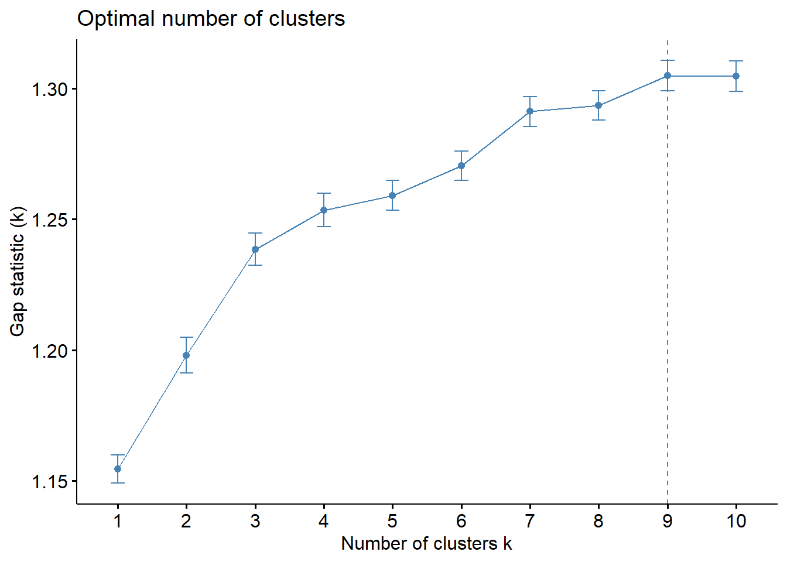
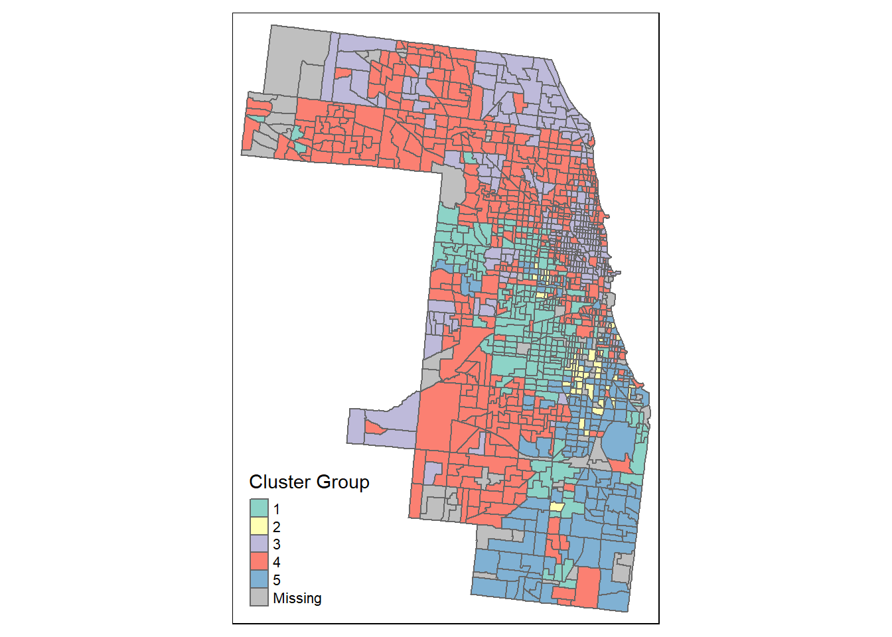
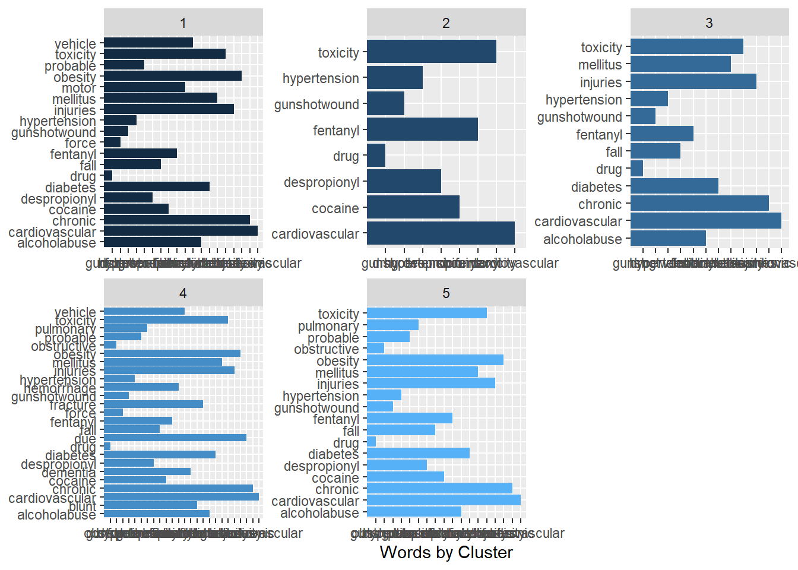
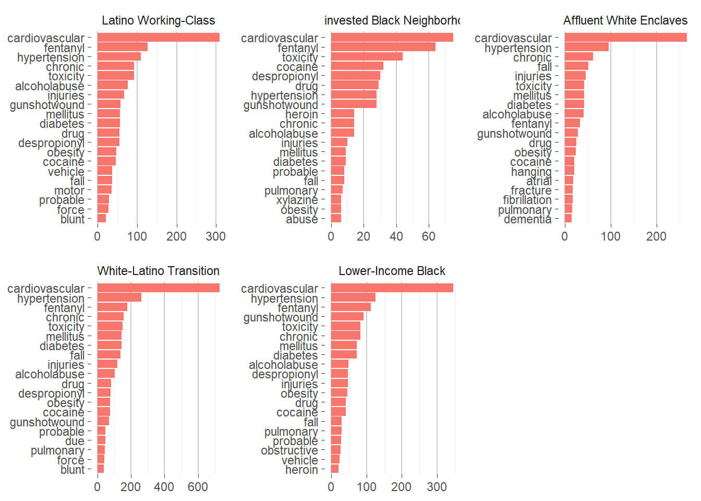
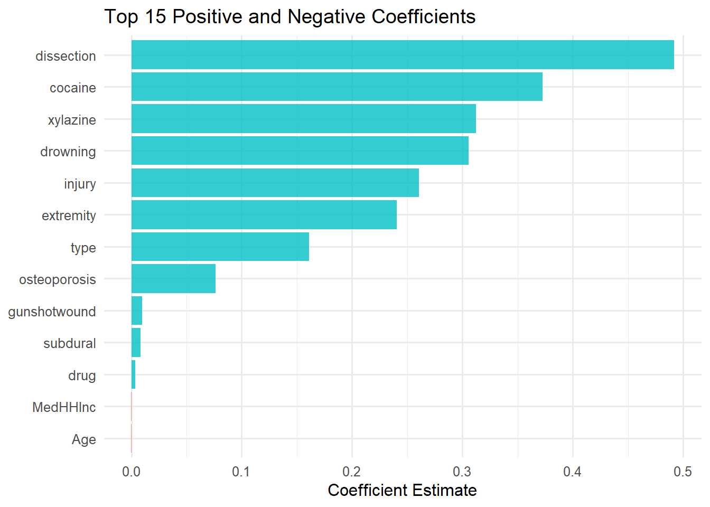

options(cli.progress = FALSE, cli.progress_show_after = Inf)
Sys.setenv(R_PROGRESSR_DISABLE = "true")
clt_tracts <-
get_acs(geography = "tract",
variables = c("B25026_001E","B02001_002E",
"B15001_050E","B15001_009E",
"B19013_001E","B25058_001E",
"B06012_002E"),
year=2020, state=17, county=031,
geometry=TRUE, output="wide") %>%
st_transform('ESRI:102728') %>%
rename(TotalPop = B25026_001E,
Whites = B02001_002E,
FemaleBachelors = B15001_050E,
MaleBachelors = B15001_009E,
MedHHInc = B19013_001E,
MedRent = B25058_001E,
TotalPoverty = B06012_002E) %>%
dplyr::select(-NAME, -starts_with("B")) %>%
mutate(pctWhite = ifelse(TotalPop > 0, Whites / TotalPop,0),
pctBachelors = ifelse(TotalPop > 0, ((FemaleBachelors + MaleBachelors) / TotalPop),0),
pctPoverty = ifelse(TotalPop > 0, TotalPoverty / TotalPop, 0),
year = "2020") %>%
dplyr::select(-Whites, -FemaleBachelors, -MaleBachelors, -TotalPoverty) HMDA
This lab will follow the general workflow describe in the article: Delmelle, E. C., & Nilsson, I. (2021). The language of neighborhoods: A predictive-analytical framework based on property advertisement text and mortgage lending data. Computers, Environment and Urban Systems, 88, 101658.
First load the libraries
Load the data - first 2020 census tracts from Cook County then a csv file of data from the Home Mortgage Disclosure Act (HMDA) that has been aggregated to the census tract level. We then join the two based on the census tract ID.
hmda<- read.csv('../../../static/media/tract_change_summary.csv')
min16 <- read.csv("C:/Users/barboza-salerno.1/Downloads/min16.csv") %>% rename(GEOID = FIPS, min16 = EP_MINRTY) %>% mutate(GEOID = as.character(GEOID))
min22 <- read.csv("C:/Users/barboza-salerno.1/Downloads/min22.csv") %>% rename(GEOID = FIPS, min22 = EP_MINRTY) %>% mutate(GEOID = as.character(GEOID))
hmda$GEOID <- as.character(hmda$census_tract)
test1<- inner_join(min16, min22, by = c("GEOID" = "GEOID"))
test2<- inner_join(test1, hmda, by = c("GEOID" = "GEOID"))
cltdata<- inner_join(clt_tracts, test2, by = c("GEOID" = "GEOID"))
cltdata$chmin <- cltdata$min22 - cltdata$min16cltdata <- cltdata %>%
mutate_if(is.character,as.numeric) %>%
dplyr::select( c("GEOID","pct_black_2018","pct_white_2018","pct_hispanic_2018","med_income_2018","delta_black","delta_white","delta_income","delta_hispanic", "pctPoverty", "min22" )) %>%
st_drop_geometry(.) %>%
na.omit(.)Warning: There was 1 warning in `stopifnot()`.
ℹ In argument: `state_code = .Primitive("as.double")(state_code)`.
Caused by warning:
! NAs introduced by coercionsummary_stats <- cltdata %>%
summarise(across(
.cols = where(is.numeric),
.fns = list(
mean = ~mean(.x, na.rm = TRUE),
sd = ~sd(.x, na.rm = TRUE),
min = ~min(.x, na.rm = TRUE),
max = ~max(.x, na.rm = TRUE)
),
.names = "{.col}_{.fn}"
))
# View the result
print(summary_stats)| Variable | Mean | SD | Min | Max |
|---|---|---|---|---|
| % Black Applicants 2019 | 0.160 | 0.279 | 0.000 | 1.000 |
| % White Applicants 2019 | 0.434 | 0.305 | 0.000 | 1.000 |
| % Latine Applicants 2019 | 0.214 | 0.282 | 0.000 | 1.000 |
| Median Income 2019 | $94,319 | $52,288 | $16,000 | $459,000 |
| % Change in Black Applicants (2019–2024) | -0.021 | 0.179 | -1.000 | 1.000 |
| % Change in White Applicants (2019–2024) | -0.064 | 0.169 | -1.000 | 1.000 |
| Change in Median Income 2019–2024 | $32,494 | $37,344 | -$250,000 | $534,000 |
| % Change in Latine Applicants (2019–2024) | 0.058 | 0.191 | -1.000 | 1.000 |
| % Poverty (2019–2024) | 0.148 | 0.115 | 0.004 | 0.739 |
| % Minoritized Group Membership 2024 | 60.794 | 29.501 | 7.2 | 100 |
data_scaled<- scale(cltdata[2:8])
distance <- get_dist(data_scaled)
fviz_dist(distance, gradient = list(low = "#00AFBB", mid = "white", high = "#FC4E07")) ##Not all that useful, but gives a sense of what we are going to try to cluster in the next steps.
set.seed(123)
k2 <- kmeans(data_scaled, centers = 2, nstart = 25)
k3 <- kmeans(data_scaled, centers = 3, nstart = 25)
k4 <- kmeans(data_scaled, centers = 4, nstart = 25)
k5 <- kmeans(data_scaled, centers = 5, nstart = 25)
k6 <- kmeans(data_scaled, centers = 6, nstart = 25)
k7 <- kmeans(data_scaled, centers = 7, nstart = 25)
k8 <- kmeans(data_scaled, centers = 8, nstart = 25)
k9 <- kmeans(data_scaled, centers = 9, nstart = 25)
p1 <- fviz_cluster(k2, geom = "point", data = data_scaled) + ggtitle("k = 2")
p2 <- fviz_cluster(k3, geom = "point", data = data_scaled) + ggtitle("k = 3")
p3 <- fviz_cluster(k4, geom = "point", data = data_scaled) + ggtitle("k = 4")
p4 <- fviz_cluster(k5, geom = "point", data = data_scaled) + ggtitle("k = 5")
p5 <- fviz_cluster(k6, geom = "point", data = data_scaled) + ggtitle("k = 6")
p6 <- fviz_cluster(k7, geom = "point", data = data_scaled) + ggtitle("k = 7")
p7 <- fviz_cluster(k8, geom = "point", data = data_scaled) + ggtitle("k = 8")
p8 <- fviz_cluster(k9, geom = "point", data = data_scaled) + ggtitle("k = 9")
grid.arrange(p1, p2, p3, p4, p5, p6, p7, p8, nrow = 3)
fviz_nbclust(data_scaled, kmeans, method = "wss")
fviz_nbclust(data_scaled, kmeans, method = "silhouette")
set.seed(123)
gap_stat <- clusGap(
data_scaled,
FUN = function(x, k) kmeans(x, centers = k, nstart = 25, iter.max = 100),
K.max = 10,
B = 50
)
fviz_gap_stat(gap_stat)
cltclusters<- cltdata %>%
mutate(cluster5 = k5$cluster) %>%
group_by(cluster5) %>%
summarise_all("mean") %>%
dplyr::select(-c("GEOID"))
kable(x=cltclusters)%>%kable_classic()Warning in attr(x, "align"): 'xfun::attr()' is deprecated.
Use 'xfun::attr2()' instead.
See help("Deprecated")| cluster5 | pct_black_2018 | pct_white_2018 | pct_hispanic_2018 | med_income_2018 | delta_black | delta_white | delta_income | delta_hispanic | pctPoverty | min22 |
|---|---|---|---|---|---|---|---|---|---|---|
| 1 | 0.0581181 | 0.1090928 | 0.7190506 | 56.78270 | 0.0224219 | 0.0021435 | 30.07173 | -0.0560549 | 0.1907036 | 86.45612 |
| 2 | 0.9256275 | 0.0031373 | 0.0301961 | 63.65686 | -0.6396863 | 0.1034510 | 23.67647 | 0.3967451 | 0.3012222 | 97.23137 |
| 3 | 0.0174317 | 0.7026531 | 0.0430664 | 167.22509 | 0.0068708 | -0.0181144 | 51.17897 | 0.0135461 | 0.0828384 | 32.35240 |
| 4 | 0.0478817 | 0.6028876 | 0.1240217 | 86.88462 | 0.0282465 | -0.1567298 | 27.55720 | 0.0841006 | 0.1248993 | 49.98383 |
| 5 | 0.6200632 | 0.0922184 | 0.1091782 | 62.54598 | -0.0891207 | -0.0016207 | 23.66092 | 0.1066034 | 0.2167798 | 90.95517 |
cltdata <- cltdata %>%
mutate(cluster5 = k5$cluster)
cltdata$GEOID<-as.character(as.numeric(cltdata$GEOID))
joined<-left_join(clt_tracts, cltdata, by = "GEOID")joined_clean <- joined %>%
filter(!st_is_empty(geometry)) # removes the 1 empty geometry
# Now plot
tm_shape(joined_clean) +
tm_polygons(col = "cluster5", style = "cat", palette = "Set3", title = "Cluster Group")
library(dplyr)
library(stringr)
me_data <- read.csv("C:/Users/barboza-salerno.1/Downloads/Medical_Examiner_Case_Archive_20250712.csv")
library(dplyr)
library(stringr)
me_data <- me_data %>%
mutate(across(
c(Primary.Cause, Primary.Cause.Line.A, Primary.Cause.Line.B, Primary.Cause.Line.C, Secondary.Cause),
~na_if(str_trim(.x), "")
)) %>%
mutate(across(
c(Primary.Cause, Primary.Cause.Line.A, Primary.Cause.Line.B, Primary.Cause.Line.C, Secondary.Cause),
~na_if(.x, "NA")
)) %>%
rowwise() %>%
mutate(
cause_text = {
# Collect non-missing values
parts <- na.omit(c_across(c(
Primary.Cause,
Primary.Cause.Line.A,
Primary.Cause.Line.B,
Primary.Cause.Line.C,
Secondary.Cause
)))
# Remove repeated phrases (keep first appearance)
unique_parts <- character()
for (part in parts) {
if (!any(str_detect(unique_parts, fixed(part)))) {
unique_parts <- c(unique_parts, part)
}
}
str_squish(paste(unique_parts, collapse = " | "))
}
) %>%
ungroup()me_sf <- me_data %>%
filter(!is.na(longitude) & !is.na(latitude)) %>%
st_as_sf(coords = c("longitude", "latitude"), crs = 4326) # assuming WGS84
# STEP 2: Transform ME data to match CRS of census tracts
me_sf_transformed <- st_transform(me_sf, crs = st_crs(joined))
# STEP 3: Spatial join — assign each ME record to a tract
me_with_tract <- st_join(me_sf_transformed, joined)me_with_tract$cause_text <- me_with_tract$cause_text %>%
trimws() %>%
tolower() %>%
str_replace_all("(\\.+|[[:punct:]])", " \\1 ") # optional punctuation cleanup
me_with_tract$cause_text <- str_replace_all(
me_with_tract$cause_text,
"\\bmultiple gunshot wounds?\\b|\\bgunshot wound(s)?( to| of)? [a-z ]+\\b|\\bgunshot wound\\b",
"gunshotwound"
)
me_with_tract$cause_text <- tolower(me_with_tract$cause_text)
me_with_tract$cause_text <- str_replace_all(me_with_tract$cause_text, "hypertensive", "hypertension")
me_with_tract$cause_text <- str_replace_all(me_with_tract$cause_text, "ethanolism", "alcoholabuse")
me_with_tract$cause_text <- str_replace_all(me_with_tract$cause_text, "ethanol", "alcoholabuse")
me_with_tract$cause_text <- str_replace_all(me_with_tract$cause_text, "atherosclerotic", "cardiovascular")
me_with_tract$cause_text <- str_replace_all(me_with_tract$cause_text, "arteriosclerotic", "cardiovascular")
me_with_tract$cause_text <- str_replace_all(me_with_tract$cause_text, "hypertensive cardiovascular disease", "cardiovascular")
# 2. Define custom remove list (medical and non-informative words)
remove_list <- c(
"anpp", "combined", "complicated", "complications", "disease", "lower", "multiple", "complicating", "complication", "comlications", "organic"
)
# 3. Tokenize and filter
words <- me_with_tract %>%
dplyr::select(cause_text, GEOID) %>%
unnest_tokens(word, cause_text) %>%
filter(!word %in% stop_words$word) %>%
filter(!word %in% remove_list) %>%
filter(!grepl("[0-9]", word)) %>%
filter(!is.na(GEOID))
# 4. Drop rare terms
words <- words %>%
add_count(word) %>%
filter(n >= 5) %>%
dplyr::select(-n)words<- me_with_tract %>% unnest_tokens(word, cause_text) %>% anti_join(stop_words) %>%
filter(!word %in% remove_list)%>%
filter(!grepl('[0-9]', word))%>%filter(!cluster5 == 0)%>%st_drop_geometry(.)Joining with `by = join_by(word)`#Remove words that only occurs less than 5 times
words$nn <- ave(words$word,words$word, FUN=length)
words$nn <- as.numeric(words$nn)
words<- words[ -which( words$nn <5), ]words_by_neighborhood <- words %>%
count(cluster5, word, sort = TRUE) %>%
ungroup()
words_by_neighborhood %>%
filter(n >= 25) %>%
arrange(n) %>%
group_by(cluster5) %>%
top_n(25, n) %>%
ungroup() %>%
mutate(n = factor(word, unique(word))) %>%
ggplot(aes(word, n, fill = cluster5)) +
geom_col(show.legend = FALSE) +
facet_wrap(~ cluster5, scales = "free", ncol = 3) +
coord_flip() +
labs(x = NULL,
y = "Words by Cluster")
# 1. Define proper cluster labels for 7 clusters
cluster.lab <- c(
'1' = "Latino Working-Class",
'2' = "Disinvested Black Neighborhood",
'3' = "Affluent White Enclaves",
'4' = "White-Latino Transition",
'5' = "Lower-Income Black"
)
# 2. Make sure your cluster column is named cluster7 and is a factor
words_by_neighborhood$cluster5 <- factor(words_by_neighborhood$cluster5)
# 3. Prepare plotting list
names <- levels(words_by_neighborhood$cluster5)
plist <- list()
# 4. Loop through each cluster and generate plots
for (i in seq_along(names)) {
d <- subset(words_by_neighborhood, cluster5 == names[i])
d <- subset(d, n >= 5)
d <- head(d[order(-d$n), ], 20) # Top 20 most frequent
d$word <- factor(d$word, levels = d$word[order(d$n)])
p1 <- ggplot(d, aes(x = word, y = n, fill = cluster5)) +
labs(y = NULL, x = NULL, fill = NULL) +
geom_bar(stat = "identity") +
facet_wrap(~cluster5, scales = "free", labeller = as_labeller(cluster.lab)) +
coord_flip() +
guides(fill = FALSE) +
theme_bw() +
theme(
strip.background = element_blank(),
panel.grid.major = element_line(colour = "grey80"),
panel.border = element_blank(),
axis.ticks = element_line(size = 0),
panel.grid.minor.y = element_blank(),
panel.grid.major.y = element_blank(),
legend.position = "bottom"
)
plist[[names[i]]] <- p1
}Warning: The `<scale>` argument of `guides()` cannot be `FALSE`. Use "none" instead as
of ggplot2 3.3.4.Warning: The `size` argument of `element_line()` is deprecated as of ggplot2 3.4.0.
ℹ Please use the `linewidth` argument instead.# 5. Display all plots in a grid (adjust ncol to your layout)
do.call("grid.arrange", c(plist, ncol = 3))
cluster_tf_idf <- words_by_neighborhood %>%
bind_tf_idf(word, cluster5, n)
cluster_tf_idf %>%
group_by(cluster5) %>%
slice_max(tf_idf, n = 15) %>%
ungroup() %>%
ggplot(aes(tf_idf, fct_reorder(word, tf_idf), fill = cluster5)) +
geom_col(show.legend = FALSE) +
facet_wrap(~cluster5, ncol = 2, scales = "free", labeller = as_labeller(cluster.lab)) +
labs(x = "tf-idf", y = NULL)
We then split into a testing and training dataset
#Make binomial variables for each cluster (could be put in an elegant loop but...)
me_with_tract<-st_drop_geometry(me_with_tract)
# Create dummy variables for clusters 1 through 7
for (i in 1:5) {
me_with_tract[[paste0("cluster", i)]] <- ifelse(me_with_tract$cluster5 == i, 1, 0)
words[[paste0("cluster", i)]] <- ifelse(words$cluster5 == i, 1, 0)
}
data_split <- me_with_tract %>% dplyr::select(Case.Number)
data_split <- initial_split(data_split)
train_data <- training(data_split)
test_data <- testing(data_split)
#transform training data from tidy data structure to a sparse matrix
sparse_words <- words %>%
count(Case.Number, word) %>%
inner_join(train_data) %>%
cast_sparse(Case.Number, word, n)Joining with `by = join_by(Case.Number)`class(sparse_words)[1] "dgCMatrix"
attr(,"package")
[1] "Matrix"dim(sparse_words)[1] 2017 229word_rownames <- rownames(sparse_words)
data_joined <- data_frame(Case.Number = word_rownames) %>%
left_join(me_with_tract %>%
dplyr::select(Case.Number, cluster1, cluster2, cluster3, cluster4, cluster5))Warning: `data_frame()` was deprecated in tibble 1.1.0.
ℹ Please use `tibble()` instead.Joining with `by = join_by(Case.Number)`It is finally time to run the logistic regression. This code will work for one cluster at a time and graph the largest positive and negative words associated with each neighborhood type. Again, we see the importance of specific neighborhood names as most discriminating. To get more interesting keywords, we need to filter out these specific neighborhood names and replace them with a generic placeholder. You’ll also notice some odd words that are likely misspellings pop up because they are rare and therefore highly discriminating of one neighborhood type. That’s where the iterative cleaning comes into play - the influence of these rare words is also an artifact of having a relatively small sample of real estate listings used in this illustrative example.
We found a handy real estate dictionary that helped us get started in cleaning our much larger dataset that is very expensive and cannot be shared with you! But if you find yourself some money, and want to re-create the analysis on real MLS data check out: https://github.com/browak/Nowak-Price-Smith-JREFE-2019 We ended up adding to those words with a full list of neighborhood names. I added that file to the github site for reference.
#Run model on training data (slow) for clusterX
is_cluster <- data_joined$cluster2 == 1 #<--- change clusterX to whatever cluster you want to plot
model <- cv.glmnet(sparse_words, is_cluster,
family = "binomial", intercept = TRUE
#parallel = TRUE, keep = TRUE
)
weights <- ifelse(data_joined$cluster2 == 1, 1, 0.25)
model<- cv.glmnet(sparse_words, is_cluster, family = "binomial", weights = weights)
#Pull out coefficients
coefs <- model$glmnet.fit %>%
tidy() %>%
filter(lambda == model$lambda.min)
#Plot coefficients
coefs %>%
group_by(estimate > 0) %>%
top_n(15, abs(estimate)) %>%
ungroup() %>%
ggplot(aes(fct_reorder(term, estimate), estimate, fill = estimate > 0)) +
geom_col(alpha = 0.8, show.legend = FALSE) +
coord_flip() + theme(axis.text=element_text(size=11)) +
labs(
x = NULL,
title = "15 largest/smallest coefficients")
Now we can see how well we can predict the type of neighborhood a listing belongs to based on the coefficients of the words contained in the listing. Remember, since we converted it to a binary problem, we are testing one class at a time. In other words, is the listing in class 1? Yes or no, given what we’ve learned. We follow with our favorite confusion matrix. In this case, we are much better at predicting it DOESN’T belong to a certain class than identify the true class. Many more True Negatives than True Positives. We could also fiddle around with the 0.8 threshold to see how that alters the prediction results.
#Prediction
intercept <- coefs %>%
filter(term == "(Intercept)") %>%
pull(estimate)
classifications <- words %>%
inner_join(test_data) %>%
inner_join(coefs, by = c("word" = "term")) %>%
group_by(Case.Number) %>%
summarize(score = sum(estimate)) %>%
mutate(probability = plogis(intercept + score))Joining with `by = join_by(Case.Number)`comment_classes <- classifications %>%
left_join(me_with_tract %>%
dplyr::select(cluster2, Case.Number), by = "Case.Number") %>% #change here to clusterX
mutate(cluster2 = as.factor(cluster2)) #change here to clusterX
## Confusion matrix
# at 0.8 threshold
library(yardstick)
library(dplyr)
comment_classes <- comment_classes %>%
mutate(
prediction = case_when(
probability > 0.5 ~ "1",
TRUE ~ "0"
),
prediction = as.factor(prediction),
cluster2 = as.factor(cluster2) # or cluster2 if that's your target
)library(glmnet)
library(dplyr)
library(ggplot2)
library(forcats)
library(broom)
for (cluster_num in 1:5) {
cluster_name <- paste0("cluster", cluster_num)
cat("\n------------------", cluster_name, "------------------\n")
# Step 1: Define binary outcome and weights
is_cluster <- data_joined[[cluster_name]] == 1
weights <- ifelse(is_cluster, 1, 0.25)
# Step 2: Fit weighted logistic regression with cross-validation
model <- cv.glmnet(sparse_words, is_cluster, family = "binomial", weights = weights)
# Step 3: Extract coefficients
coefs <- broom::tidy(model$glmnet.fit) %>%
filter(lambda == model$lambda.min)
# Step 4: Plot top coefficients
coefs %>%
filter(term != "(Intercept)") %>%
group_by(estimate > 0) %>%
top_n(15, abs(estimate)) %>%
ungroup() %>%
ggplot(aes(fct_reorder(term, estimate), estimate, fill = estimate > 0)) +
geom_col(show.legend = FALSE, alpha = 0.8) +
coord_flip() +
theme_minimal() +
labs(title = paste("Top Coefficients for", cluster_name), x = NULL, y = "Estimate")
# Step 5: Predict using coefficients
intercept <- coefs %>% filter(term == "(Intercept)") %>% pull(estimate)
beta_coefs <- coefs %>% filter(term != "(Intercept)") %>%
rename(word = term)
classifications <- words %>%
inner_join(beta_coefs, by = "word") %>%
group_by(Case.Number) %>%
summarize(score = sum(estimate), .groups = "drop") %>%
mutate(probability = plogis(intercept + score))
# Step 6: Attach ground truth and create predictions
comment_classes <- classifications %>%
left_join(me_with_tract %>% select(Case.Number, !!sym(cluster_name)), by = "Case.Number") %>%
rename(truth = !!sym(cluster_name)) %>%
mutate(
prediction = if_else(probability > 0.7, 1, 0)
)
# Step 7: Evaluation metrics
TP <- sum(comment_classes$truth == 1 & comment_classes$prediction == 1)
TN <- sum(comment_classes$truth == 0 & comment_classes$prediction == 0)
FP <- sum(comment_classes$truth == 0 & comment_classes$prediction == 1)
FN <- sum(comment_classes$truth == 1 & comment_classes$prediction == 0)
accuracy <- (TP + TN) / (TP + TN + FP + FN)
sensitivity <- TP / (TP + FN)
specificity <- TN / (TN + FP)
precision <- ifelse((TP + FP) == 0, NA, TP / (TP + FP))
f1 <- ifelse(is.na(precision) | (sensitivity + precision) == 0, NA,
2 * (precision * sensitivity) / (precision + sensitivity))
# Print metrics
cat("Accuracy: ", round(accuracy, 3), "\n")
cat("Sensitivity:", round(sensitivity, 3), "\n")
cat("Specificity:", round(specificity, 3), "\n")
cat("Precision: ", round(precision, 3), "\n")
cat("F1 Score: ", round(f1, 3), "\n")
}
------------------ cluster1 ------------------
Accuracy: 0.802
Sensitivity: 0.014
Specificity: 0.999
Precision: 0.75
F1 Score: 0.027
------------------ cluster2 ------------------
Accuracy: 0.89
Sensitivity: 0
Specificity: 1
Precision: NA
F1 Score: NA
------------------ cluster3 ------------------
Accuracy: 0.86
Sensitivity: 0.024
Specificity: 0.998
Precision: 0.667
F1 Score: 0.046
------------------ cluster4 ------------------
Accuracy: 0.763
Sensitivity: 0
Specificity: 1
Precision: NA
F1 Score: NA
------------------ cluster5 ------------------
Accuracy: 0.807
Sensitivity: 0
Specificity: 1
Precision: NA
F1 Score: NA library(Matrix)
library(dplyr)
library(tidyr)
library(glmnet)
library(broom)
library(ggplot2)
library(forcats)
library(dplyr)
library(tidyr)
library(Matrix)
library(glmnet)
library(broom)
library(ggplot2)
library(forcats)
library(text2vec)
# --- Step 1: Sparse matrix of word counts ---
sparse_words <- words %>%
count(Case.Number, word) %>%
inner_join(train_data, by = "Case.Number") %>%
cast_sparse(Case.Number, word, n)
# --- Step 2: Prepare covariates ---
# Ensure covariates include Case.Number and match sparse matrix
covariate_vars <- c("Case.Number", "MedHHInc", "Age", "Gender") # adjust as needed
covariate_data <- me_with_tract %>%
dplyr::select(all_of(covariate_vars)) %>%
drop_na() # drop missing rows
# --- Step 3: Align rows of sparse matrix and covariates ---
common_ids <- intersect(rownames(sparse_words), covariate_data$Case.Number)
sparse_words_clean <- sparse_words[common_ids, ]
covariate_data_clean <- covariate_data %>%
filter(Case.Number %in% common_ids) %>%
arrange(match(Case.Number, common_ids))
# --- Step 4: Create covariate matrix ---
X_covariates <- model.matrix(~ ., data = covariate_data_clean %>% select(-Case.Number))[ , -1]
# --- Step 5: Combine text + covariates ---
X_full <- cbind(sparse_words_clean, X_covariates)
# --- Step 6: Define outcome and weights ---
data_aligned <- me_with_tract %>%
filter(Case.Number %in% rownames(X_full)) %>%
arrange(match(Case.Number, rownames(X_full)))
# Replace 'cluster2' with your desired binary outcome variable
is_cluster <- data_aligned$cluster2 == 1
weights <- ifelse(is_cluster, 1, 0.25)
# --- Step 7: Fit glmnet model ---
model <- cv.glmnet(X_full, is_cluster, family = "binomial", weights = weights)
# --- Step 8: Extract coefficients at optimal lambda ---
coefs <- tidy(model$glmnet.fit) %>%
filter(lambda == model$lambda.min)
# --- Step 9: Plot top coefficients ---
coefs %>%
filter(term != "(Intercept)") %>%
group_by(estimate > 0) %>%
slice_max(order_by = abs(estimate), n = 15) %>%
ungroup() %>%
ggplot(aes(fct_reorder(term, estimate), estimate, fill = estimate > 0)) +
geom_col(alpha = 0.8, show.legend = FALSE) +
coord_flip() +
theme_minimal(base_size = 12) +
labs(
title = "Top 15 Positive and Negative Coefficients",
x = NULL,
y = "Coefficient Estimate"
)
library(yardstick)
library(dplyr)
library(tibble)
# --- Define cluster mapping ---
cluster_labels <- c(
cluster1 = "Latino Working-Class",
cluster2 = "Disinvested Black Neighborhood",
cluster3 = "Affluent White Enclaves",
cluster4 = "White-Latino Transition",
cluster5 = "Lower-Income Black"
)# --- Initialize list to store model results ---
results_list <- list()
for (cluster_col in names(cluster_labels)) {
# --- Define outcome ---
data_aligned <- data_joined %>%
filter(Case.Number %in% rownames(X_full)) %>%
arrange(match(Case.Number, rownames(X_full)))
is_cluster <- data_aligned[[cluster_col]] == 1
weights <- ifelse(is_cluster, 1, 0.25)
# --- Fit model ---
model <- cv.glmnet(X_full, is_cluster, family = "binomial", weights = weights)
# --- Extract coefficients ---
coefs <- broom::tidy(model$glmnet.fit) %>%
filter(lambda == model$lambda.min)
intercept <- coefs %>% filter(term == "(Intercept)") %>% pull(estimate)
beta_coefs <- coefs %>% filter(term != "(Intercept)")
matched_beta <- beta_coefs %>%
filter(term %in% colnames(X_full)) %>%
arrange(match(term, colnames(X_full)))
X_mat <- X_full[, matched_beta$term]
score <- as.numeric(X_mat %*% matched_beta$estimate) + intercept
probability <- plogis(score)
prediction_vec <- ifelse(probability > 0.7, 1, 0)
# --- Create eval_data ---
eval_data <- data.frame(
Case.Number = rownames(X_full),
truth = factor(is_cluster, levels = c(FALSE, TRUE), labels = c(0, 1)),
prediction = factor(prediction_vec, levels = c(0, 1))
)
# --- Compute metrics ---
acc <- accuracy(eval_data, truth = truth, estimate = prediction)$.estimate
sens <- sensitivity(eval_data, truth = truth, estimate = prediction)$.estimate
spec <- specificity(eval_data, truth = truth, estimate = prediction)$.estimate
prec <- precision(eval_data, truth = truth, estimate = prediction)$.estimate
f1 <- f_meas(eval_data, truth = truth, estimate = prediction)$.estimate
# --- Store results ---
results_list[[cluster_col]] <- tibble(
cluster = cluster_col,
label = cluster_labels[[cluster_col]],
Accuracy = round(acc, 3),
Sensitivity = round(sens, 3),
Specificity = round(spec, 3),
Precision = round(prec, 3),
F1_Score = round(f1, 3)
)
}
# Combine into results table
results_all <- bind_rows(results_list)
print(results_all)# A tibble: 5 × 7
cluster label Accuracy Sensitivity Specificity Precision F1_Score
<chr> <chr> <dbl> <dbl> <dbl> <dbl> <dbl>
1 cluster1 Latino Working-C… 0.794 0.971 0.08 0.81 0.883
2 cluster2 Disinvested Blac… 0.943 1 0 0.943 0.971
3 cluster3 Affluent White E… 0.902 0.968 0.52 0.92 0.944
4 cluster4 White-Latino Tra… 0.504 0.265 0.858 0.734 0.39
5 cluster5 Lower-Income Bla… 0.784 0.922 0.204 0.829 0.873